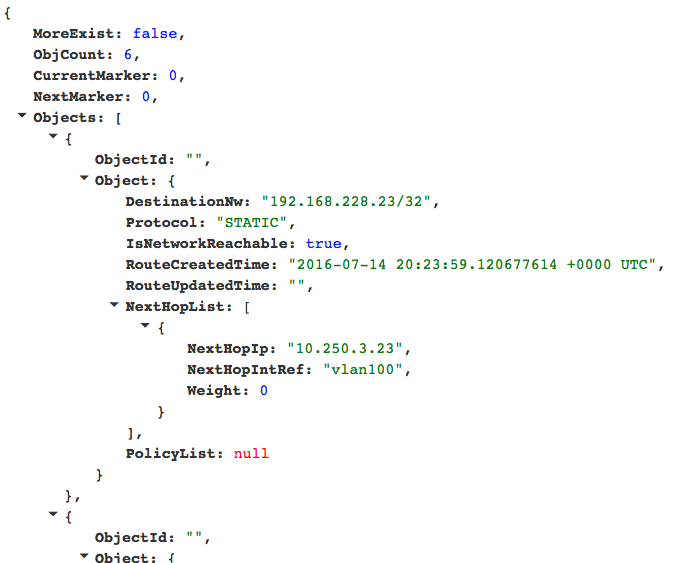

DNS Example
We use an external face-ing DNS cluster scenario as our demo use-case for ToRC. This demo will provide some insides in to sub-schedulers, optimization components, and sub-networking.

Components / Services
All the components in blue in the diagram above are part of this use-case. They all get deployed as Docker containers using Mesos which interacts with our schedulers.
- DNS Scheduler: Orchestrates placement of demo services.
- DNS Service: Simple bind9 daemon.
- Load-generator: Generates DNS specific load and spreads it equally across the running demo DNS servers.
- Smartscaling: Observes network load on each demo DNS server. The necessary date gets read from InfluxDB, and based on that data decisions get made about when to add or remove additional DNS servers. It interacts with the DNS Scheduler to execute on those insights.
Installation
Prerequisites
It is assumed that all the ToRC Core services are deployed and up and running. Please refer to the corresponding ToRC Core section in the installation guide.
Build Containers
All the scripts we are using are built according to our demo setup. If you setup differs you will have to change the scripts accordingly.
Checkout torc-scripts repository on your local host:
localhost:$ git clone https://github.com/att-innovate/torc-scripts.git
For simplification instead of using a Docker registry we use a script that ssh in to the different hosts and runs docker build for all the required containers.
The list of hosts can be found in ./torc-scripts/deploy/example-dns/slaves.txt.
localhost:~$ cd torc-scripts/deploy/example-dns/
localhost:~/torc-scripts/example-dns/$ ./docker_build_slaves.sh
The script will ask for the password for the default user (bladerunner) and for sudo, which is required for building of the containers.
Deploy DNS-Scheduler
The DNS-Scheduler works with a default configuration aligned to our demo setup and the diagram about the DNS use-case above. We will be installing the DNS-Scheduler on bladerunner3 according to the diagram above and use bladerunner1 and bladerunner2 for our DNS servers.
Details about the DNS-Scheduler configuration can be found in torc-scripts/docker/example-dns/torc-dns-scheduler/provision/config.yml on bladerunner3.
localhost:$ ssh bladerunner@bladerunner3
bladerunner@bladerunner3:~$ sudo ./torc-scripts/deploy/example-dns/onnode/docker_build_dns_scheduler_slave.sh
Verify that all the necessary images got built by listing the docker images.
bladerunner@bladerunner3:~$ sudo docker images
Run DNS-Scheduler
The DNS-Scheduler can get started by using the ToRC-Scheduler API. Following script will use that API to get it started. You can run it from your localhost.
localhost:$ ./torc-scripts/demo/run_dns_scheduler.sh
If you check the Mesos Frameworks page you should see the DNS-Scheduler showing up.
The DNS-Scheduler itself will start up a first dns server on bladerunner1, which can be seen on the Mesos Tasks page.
This first dns server dns-sl1.service.torc like any use-case specific container will get an internal IP in form of 192.168.2.xxx which can be checked via Consul UI.
By default we also configure /32 routes for those containers. This can be checked via SnapRoute Config.
Demo
The demo setup uses a simple “Optimizer” to scale our DNS cluster based on the collected metrics.
The demo will also provide some insides in to the inner-workings of ToRC and its core services.
All the scripts needed are in the torc-scripts/demo folder, and as always, the scripts are specifically written for our demo setup, see diagram above, but can be changed according to your setup.
Restart DNS-Scheduler
Lets start with a fresh state. Change in to your local torc-scripts/demo folder, and restart the scheduler.
localhost:$ ./kill_dns_scheduler.sh
localhost:$ ./run_dns_scheduler.sh
Use Mesos-Tasks to verify that the scheduler and dns-sl1 server are up and running.
Add DNS Load
Next we start two load-generators to put some DNS load on to our DNS server. Those scripts will interact with the DNS Scheduler to have the corresponding services started.
localhost:$ ./run_normalload200.sh
localhost:$ ./run_normalload400.sh
Vector can be used to observe the network load on the dns server on bladerunner1. The network widget as a configurable filter which can be used to observe load on p2p2 only.
Start SmartScaling
We implemented a simple scaling algorithm in Scala and wrapped everything in a container. Code can be found in the torc-scripts example-dns. The scaling optimizer retrieves data from InfluxDB and interacts with the DNS scheduler to start or kill a 2nd DNS server to handle the additional load.
localhost:$ ./run_smartscaling.sh
As soon as our scaling algorithm tells the scheduler to start a 2nd dns server we should see a dip in the load on our 1st DNS server.
Decrease Load
We will kill one of the load generators. Based on that the scaling algorithm should after a while kill the 2nd DNS server, which will slightly increase the load on the 1st DNS server.
All can be observed using Vector.
Stop Demo
All the components related to the demo can be stopped by simply killing the DNS scheduler.
localhost:$ ./kill_dns_scheduler.sh
Some Insides
During the demo you can also observe the related changes and metrics using the admin UIs of the core services.
Mesos-Tasks
Shows the running DNS servers.
etcd-browser
Changes in global state, like routes for the containers, can be observed using etcd-browser
SnapRoute
Routes to the DNS related containers can also be checked in snap-routes

Consul
To verify that the DNS related containers get their own DNS entry.
InfluxDB
Provides a nice SQL interface to our use-case specific time-series.